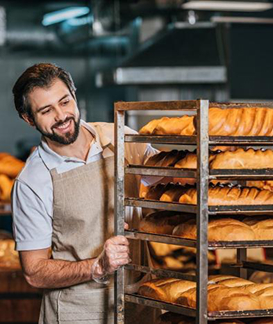
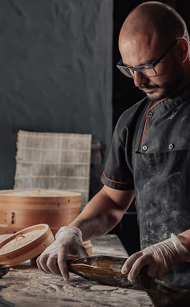
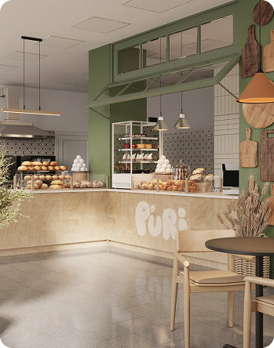
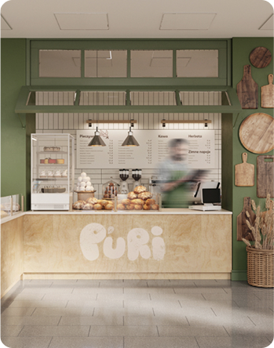
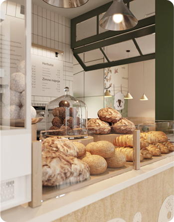

Сучасна пекарня
- Великий попит на ринку
- Доступні за бюджетом формати
- Досвідчена управлінська команда
Новий формат традицій
shop bakery — це пекарня, яка взяла все найкраще, і зберегла смак традиційної випічки та натуральність інгредієнтів.
Ми працюємо як найвідоміші мережі— 5 хвилин і замовлення готове. А ще у наших пекарень стильний дизайн та висока якість обслуговування!
Наші найкращі шеф-кухарі
-

Настя
Привіт, я Настя!
Вже 10 років, я свтілюю у життя цікаві та смачні ідеї.
Я випічу для вас найсмачніщі вироби!
-
 Влад
Привіт, я Влад!
Мій кодитерський стаж вже 18 років. SHOP BEKERY - це наша любов, з якою ми ділимось кожен раз з Вами через нашу випічку!
Я зроблю для вас унікальну начинку на будь який смак!
Формати
-
 Walrus
Площа: до 120 м2
Меню: розширене меню
Штат: 2 продавці-касири, 2 пекарі, 2 помічники пекаря, 2 офіціанти-різнороби
Посадкові місця: є
-
 Horseshoe
Площа: до 25 м2
Меню: найпопулярніші позиції меню
Штат: 2 продавці-касири, 2 пекарі, 1 помічник пекаря
Посадкові місця: відсутні
-
 Handlebar
Площа: до 15 м2
Меню: найпопулярніші позиції меню
Штат: 1 продавець, 1 пекар, 1 помічник пекаря
Посадкові місця: відсутні